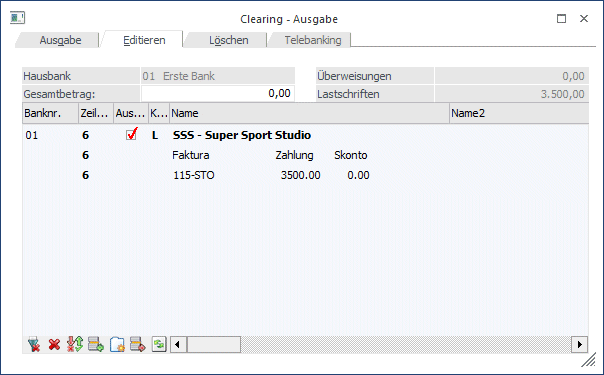

Die Übernahmedatei kann, bevor die Datei zur Übermittlung an die Bank erstellt wird, editiert werden, wobei Datensätze gelöscht, verändert oder hinzugefügt werden können. Diese Änderungen haben aber keinerlei Auswirkungen auf die Daten, die bereits durch den Zahlungsverkehr verändert wurden.
Nachfolgend erhalten Sie eine Beschreibung der Datenfelder:

Ø Gesamtbetrag
Hier können Sie den Gesamtbetrag eingeben, bis zu dem die Überweisungen in Summe durchgeführt werden sollen. Das Programm wird dann nur die Überweisungszeilen aktivieren, die in Summe möglichst nah an den Grenzbetrag herankommen.
Datenfelder des Kopfteiles
In Textfeldern sind nur Ziffern, Buchstaben und die Zeichen Plus, Komma, Bindestrich, Punkt, Schrägstrich und Leerzeichen erlaubt. Werden andere Sonderzeichen in Datenfeldern eingetragen, werden diese Zeichen vor Ausgabe der Daten auf die Diskette in das Zeichen „.“ umgewandelt.
Behandlung von Umlauten
Werden in Datenfeldern Umlaute eingetragen, werden diese automatisch umgewandelt (Ä zu AE etc.) Wird durch diese Umwandlung die vorgegebene Feldlänge überschritten, wird die Überlänge des Feldes abgeschnitten.
Ø Banknr.
Hier wird die Nummer der Hausbank angezeigt, über die die Überweisung/Lastschrift durchgeführt werden soll.
Ø Zeilenanzahl
Anzeige der Zeilenanzahl pro Überweisung
Ø Auswahl
Diese Spalte beinhaltet eine Checkbox. Ist diese Checkbox aktiviert, bedeutet das, dass die Überweisung/Lastschrift durchgeführt wird.
Ø Kennzeichen
U Überweisung
L Lastschrift
Ø Name
Name des Überweisungs-Empfängers bzw. des Lastschrift-Empfängers
Ø Name 2
Hier wird der Kontoname2 aus dem Personenkontenstamm übernommen und ist editierbar. Dieses Feld wird nur in das Format DTAZV übernommen, also bei einer Deutschen-V2-Datei im Auslandszahlungsverkehr.
Ø Betrag
Eingabe des Überweisungsbetrages bzw. des Lastschriftbetrages. Es dürfen nur 8 Vorkomma-/2 Nachkommastellen eingegeben werden.
Ø Auslandszahlung
Es wird angezeigt, ob es sich um eine Inlands- oder Auslandszahlung handelt.
Ø Prüflauf
Durch einen Doppelklick auf den Info-Button kann angezeigt werden, warum z.B. eine Inlands-Überweisung eine Inlands-Überweisung ist, oder was fehlt, um eine EU-Auslandsüberweisung zu erhalten.
Ø Währung
Anzeige der Zahlungswährung (die im Zahlungsstapel vorgegeben wurde) - Achtung: Sobald Sie Währungskennzeichen mitgeben, müssen Sie die Überweisungen im V3-Format (siehe Bankenstamm) durchführen.
Ø Landescode
Anzeige des Länderkennzeichens des Personenkontos (siehe Länderstamm und Bankleitzahlenstamm).
Ø PLZ, ORT, Straße
Anschrift des Überweisungs-Empfängers.
Im Inlandszahlungsverkehr sind diese Felder nicht zwingend auszufüllen.
In Deutschland wird diese Zeile automatisch in die erste Textzeile kopiert und muss dort gespeichert werden.
Ø Datum
Eintragung des Beleg-Datums in der Form TT-MM-JJJJ. Bei der Erstellung von Dispositionslisten und Datenträgern kann die Auswahl von Überweisungen und Lastschriften selektiv nach dem Beleg-Datum erfolgen.
Ø Verwendungszweck
Hier wird entweder der OP-Text der Faktura (bzw. die zu überweisende Fakturennummer) oder der Text "lt. Begleitzettel" ausgegeben. Sollte im Kurzverwendungszweck nur mit Zahlen gearbeitet worden sein, bzw. sollte der Kurzverwendungszweck max. 12stellig numerisch sein, so wird dieser Inhalt in das Feld Kundendaten (in der V3-Datei) weitergegeben.
Über die Einstellung "Textvorbelegung" in den Clearing Parametern kann mittels Optionen 7 (Standard; Verwendungszweck = 1. Zusatzfeld) und 8 (1-Zeilig; Verwendungszweck = 1. Zusatzfeld) alternativ definiert werden, welcher Text in das Feld "Verwendungszweck" geschrieben wird.
Ø Landescode BLZ
Anhand des Kennzeichens wird im Bankenstamm selektiert, ob es sich um eine Auslands- oder Inlands-BLZ handelt, und somit um einen Auslands- oder Inlandszahlungsverkehr.
Ø BLZ
Bankleitzahl des Überweisungsempfängers bzw. des Kunden, für den ein Bankeinzug durchgeführt wird. Die Eintragung erfolgt ohne Leerstellen. Einschränkung: sie darf nicht mit der Ziffer 0, beginnen. Wird hier eine BLZ eingetragen, die im BLZ-Stamm nicht hinterlegt ist, erfolgt ein entsprechender Hinweis.
Ø Kontonummer
D 10stellig
A 13stellig
Bank-Kontonummer des Überweisungsempfängers bzw. des Kunden, für den ein Bankeinzug durchgeführt wird.
Ø Bankenidentifikationscode
Eindeutige Bezeichnung der Bank - relevant für Auslandszahlungsverkehr. Damit kann die Bank eindeutig identifiziert werden (ist vom jeweiligen Bankinstitut bei Auslandsüberweisungen zu erfragen).
Ø IBAN
Hier kann die IBAN (International Bank Account Number) eingetragen werden. Ist die IBAN bereits im Personenkonto hinterlegt, wird sie automatisch vorgeschlagen bzw. übernommen. Die IBAN ist eine eindeutige Kombination aus Länderkennzeichen, Bankleitzahl und Kontonummer. Wird die Eingabe bestätigt, erfolgt auch eine Plausibilitätsprüfung - ist die IBAN nicht richtig, wird ein entsprechender Hinweis angezeigt. Die IBAN ist im Auslandszahlungsverkehr "zwingend" vorgeschrieben, da sich sonst die Kosten für die Überweisungen erhöhen.
Hinweis
Ist im Personenkonto ein IBAN angegeben, wird nun bei der Clearing-Ausgabe geprüft, ob es einen BIC gibt. Bei der Clearing-Ausgabe bzw. im Clearing-Editieren wird eine entsprechende Fehlermeldung angegeben, fall kein BIC vorhanden ist.
Ø Schlüssel
Wird nur in Deutschland verwendet.
Es wird mit der Schlüsselzahl eine zusätzliche Kennung eingetragen. Schlüsselzahlen werden manuell abhängig vom Inhalt vergeben. Die Vorbesetzung steht auf 51000. Anleitung für die Vergabe von
Ø Schlüsselzahlen:
ü 51000
Überweisungen
ü 52000
Daueraufträge
ü 53000
Lohn- und
Gehaltszahlung
ü
54....
Vermögenswirksame
Leistung. Die letzten 3 Stellen des Schlüssels werden nach folgendem Schema
vergeben: 54XXY XX ist der Prozentsatz der Sparzulage. Y ist die letzte Zahl des
Jahres
Beispiel
54167 entspricht der Vermögenswirksamen Leistung 16% Sparzulage für 1997
ü 04000
Lastschrift nach dem
Abbuchungsauftragsverfahren (mit fixem Betrag)
ü 05000
Lastschrift nach dem
Einzugsermächtigungsverfahren (mit variablem Betrag)
Ø Personenkontonummer
FIBU-Kontonummer des Empfängers
Ø Kontenbezeichnung
Name des FIBU-Kontos
Ø Rest. Felder
Alle restlichen Felder werden von den Clearing-Parametern befüllt, die Sie im Zahlungsverkehr im Fenster "Ausgabe" über den Button "Clearing-Parameter" vorgeben können. Sind nur relevant für den Auslandszahlungsverkehr.
Die Ausnahme bildet hier die Spalte
Ø Zahlungsgrund
Wird als "Processing Indicator" (zur Meldung an die ONB) die Einstellung "3-Sonstiges" verwendet, so kann in der Spalte "Zahlungsgrund" ein solcher angegeben werden (Bei Verwendung der Einstellung "1-Import" oder "2-Eigenübertrag" ist dies der eigentliche Zahlungsgrund).
SEPA-Lastschriftfelder
Für SEPA-Lastschriften werden die nachfolgenden drei Felder benötigt. Sie werden aus dem Personenkontenstamm des Debitors gefüllt und können noch editiert werden.
Ø Mandats-ID
Mit dem Debitor vereinbarte Mandats-ID.
Ø Mandatsunterzeichnung
Entspricht dem Feld "gültig von" im Personenkontenstamm.
Ø Mandatsgültig
Entspricht dem Feld "gültig bis" im Personenkontenstamm.
Überweisungs-Mittelteil:
Nach der Kopfzeile können max. 12 Textzeilen angedruckt werden, die z.B. den Verwendungszweck (Fakturennummer, Skontobetrag, Zahlungsbetrag) beinhalten können.
Welche Variablen hier angeführt werden, kann durch Anpassung des Formulars P01W37CLEAR gesteuert werden.
Pro Kopfsatz muss zumindest eine Textzeile eingetragen werden. Unterbleibt die Textzeile, wird die Überweisung/Lastschrift für das Clearing-Verfahren nicht akzeptiert. Sie wird vor der Erstellung der Clearing-Diskette mit einer Fehlermeldung im Prüfprotokoll abgewiesen.
Wird die Obergrenze von 12 Textzeilen überschritten, werden die Textzeilen bei der Erstellung der Clearing-Diskette mit einer Fehlermeldung im Prüfprotokoll abgewiesen.
Werden daher mehr als 11 Fakturen pro Konto überwiesen, druckt das Programm im Zahlungsverkehr automatisch einen Begleitzettel (außer die Option "Begleitzettel" ist aktiviert, dann wird der Begleitzettel IMMER gedruckt) und schreibt nur mehr den Text "lt. Begleitzettel" in den Verwendungszweck.
Änderung von Datensätzen
Die in der Eingabemaske dargestellten Datensätze können jederzeit geändert werden. Alle Felder der Eingabemaske können angeklickt werden. Nur jene Felder, die editiert werden dürfen, werden durch das Anklicken markiert und können überschrieben bzw. geändert werden.
Alle anderen Felder bekommen einen schwarzen Rand als Kennzeichnung, dass sie aktiv sind; es können aber keine Änderungen vorgenommen werden.
Werden Datensätze editiert, muss, um die Änderung wirksam werden zu lassen, der OK-Button (F5-Taste) gedrückt werden. Wird nach Änderung von Datensätzen (ohne Speichern mittels OK-Button) in ein anderes Register (z.B. Löschen) gewechselt, werden die Änderungen verworfen.
Einfügen von Textzeilen
Durch Anklicken des EINFÜGEN-Buttons bzw. durch Drücken der Tastenkombination ALT + F werden zwei (in Deutschland 3) Zeilen vor der zuletzt aktiven Zeile eingefügt.
Löschen von Datensätzen
Hier gibt es zwei Varianten:
ü Löschen von Datensätzen
ü Löschen von Textzeilen
Soll der gesamte Datensatz gelöscht werden, wird ein Teil der Kopfzeile (z.B. U/L oder Kontoname) aktiviert und danach der ENTFERNEN-Button bzw. die Tastenkombination ALT + T gedrückt.
Soll nur eine einzelne Textzeile gelöscht werden, wird diese aktiviert und kann ebenfalls durch Drücken des ENTFERNEN-Buttons bzw. der Tastenkombination ALT + T gelöscht werden.
Die Nummerierung der Datensätze wird erst nach dem Abspeichern bzw. dem Neuaufruf des Editierens erneuert.
Achtung
Wenn aus einer CLEARING-Datei, die über den WinLine FIBU-Zahlungsverkehr erstellt wurde, ein Datensatz gelöscht wird, hat das keine Auswirkung auf bereits gebuchte oder im Zahlungsstapel befindliche Daten.
Erstellen von Datensätzen
Neue Datensätze können durch Drücken der Tastenkombination ALT + N bzw. durch Anklicken des NEU-Buttons erfasst werden. Eine neue Kopf- und 2 Textzeilen (bei einem deutschen Datenstand 3 Textzeilen) werden hinzugefügt und können bearbeitet werden.
Alle Änderungen können entweder durch Drücken der F5-Taste gespeichert bzw. durch Drücken der ESC-Taste gelöscht werden.
Beim Speichern des Clearing-Files wird automatisch geprüft, ob alle für eine Ausgabe relevanten Grunddaten (wie z.B. Bankkontonummer, Bankleitzahl, etc.) vorhanden sind. Erst wenn diese MUSS-Felder in allen Zeilen vollständig ausgefüllt sind, kann das File gespeichert und ausgegeben werden.
Prüfen von Datensätzen
Wenn man einen Datensatz aktiviert, dann die rechte Maustaste anklickt und die Option "Prüflauf" auswählt, dann kann der Datensatz geprüft werden. Dabei erhält man den Hinweis, warum man eine Inlandsüberweisung, eine Auslandsüberweisung oder KEINE EU-Überweisung bekommen hat. Sollte es mehrere Probleme geben, wird natürlich nach dem ersten Problem bereits die Fehlermeldung ausgegeben. D.h. man muss den Fehler korrigieren und anschließend nochmals die rechte Maustaste drücken.
Diese Funktion kann auch über den Button Prüflauf in der Tabelle oder durch die Tastenkombination ALT + P ausgeführt werden.
Gilt nur für Italien:
Im Clearing-Editieren kann der cod.fiscale für die Dateiausgabe im RiBa-Format editiert werden.
Buttons
Ø OK
Durch Anklicken des OK-Buttons werden alle vorgenommenen Änderungen gespeichert, wobei auch gleich eine Plausibilitätsprüfung vorgenommen wird, d.h. es wird geprüft, ob alle Datensätze vollständig ausgefüllt sind. Nach dem Speichern steht man wieder im Register "Ausgabe", wo dann die Clearing-Datei erzeugt werden kann.
Ø Ende
Durch Drücken der ESC-Taste wird das Fenster geschlossen. Wurden Änderungen durchgeführt, wird gefragt, ob diese gespeichert werden sollen oder nicht.
Wenn in ein anderes Register gewechselt wird und es wurden Änderungen durchgeführt, dann erfolgt die Abfrage, ob geänderte Datensätze gespeichert werden sollen oder nicht.
Tabellenbuttons
Ø Alle / Keine
Mittels der Buttons Alle bzw. Keine können Sie alle Einträge in der Tabelle selektieren, bzw. deselektieren.
Ø Umkehr
Die zuvor getroffene Selektion wird umgekehrt.
Ø Einfügen/Entfernen
Es können neue Zeilen in die Tabelle eingefügt, bzw. bestehende Zeilen entfernt werden.
Ø Neu
Es wird eine neue zu bearbeitende Zeile in die Tabelle eingefügt.
Ø Prüflauf
Es wird ein Testlauf gestartet, der die Korrektheit der Angaben überprüft und ggf. eine Fehlermeldung zurückgibt.
Ø Tabelleneinstellungen speichern
Die Eingabefelder einer Tabelle können grundsätzlich frei gestaltet werden. Dabei können Spalten an beliebige Positionen verschoben oder die Spaltenbreiten verändert werden. Durch Anwahl des Buttons "Tabelleneinstellungen speichern" werden die Einstellungen benutzerspezifisch gespeichert und bei dem nächsten Aufruf des Programmpunktes wieder vorgeschlagen.
Ø Gesamteinstellungen speichern
Im Gegensatz zu "Tabelleneinstellungen speichern" können mit "Gesamteinstellungen speichern" mehrere Tabellenaufbauten gespeichert und nach Wunsch geladen werden. Zusätzlich werden Sonderfunktionen der Tabelle (z.B. "Spalte gruppieren") ebenfalls bei der Speicherung bedacht.